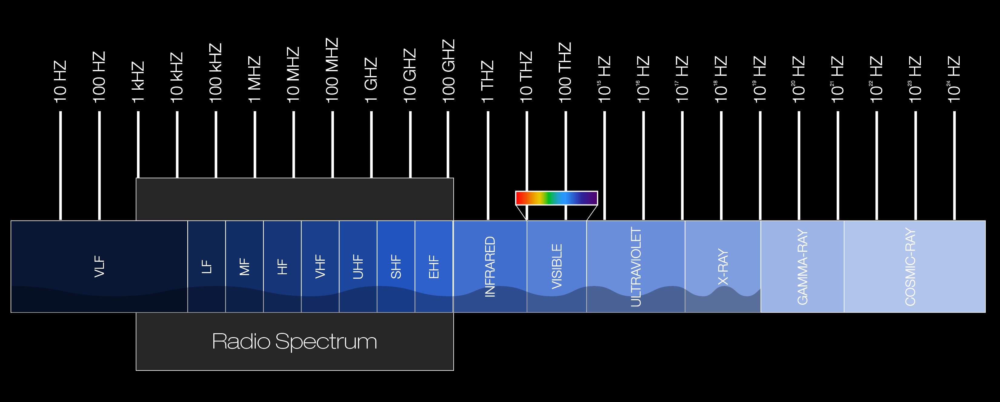

The 5G tower transmits and receives radio waves. Radio waves had the longest wavelength in the electromagnetic spectrum and the lowest frequency. The length of a 1-millimeter field to larger than Earth and 300 gigahertz. Radio waves are known for communication technology like phones, TV, and radio. These devices can convert radio waves to mechanical vibration and with that vibration people can tune the frequency and the wavelength to listen to other radio channels.
In the Electromagnetic spectrum as the frequency decreases the energy they have increases. Since radio waves have the lowest frequency their photons have the lowest energy with about 2x10^-24 which is about 1 over 500,000,000,000,000,000,000,000.
Radio waves have both natural and artificial sources. An example of natural sources is the sun and the ionosphere. The solar flares of the sun emit strong radio waves. The ionosphere does not release any radio waves but reflects them; this is how we can communicate with radio waves over a long distance. For the artificial source mostly any electronic device releases and receives radio waves.